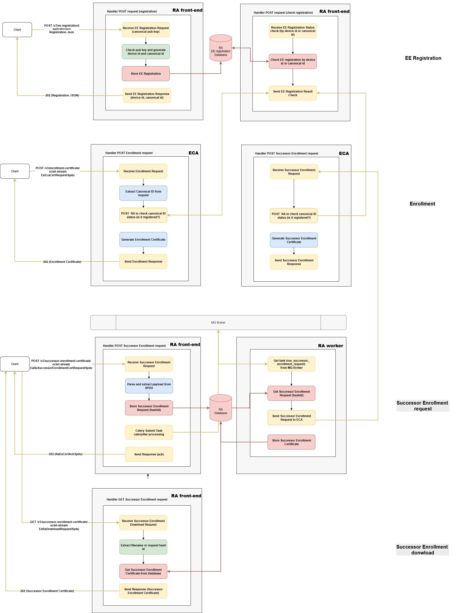
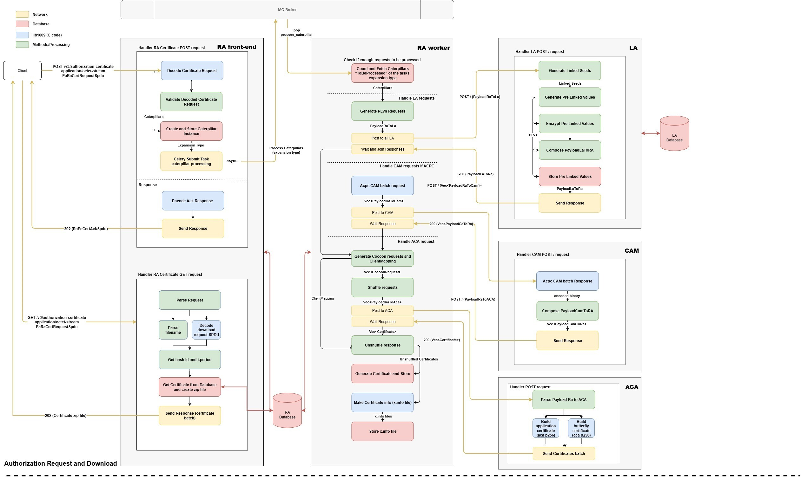

Architecture Overview
This page describes the OpenSCMS architecture and explains how its core components interact across the main system workflows.
The architecture is presented through four end-to-end flows that represent the primary interactions between an EE and the system:
- Authorization Certificate — Request & Download
- EE Registration
- Enrollment Request
- Successor Enrollment Request
Each section below outlines the responsibilities of the involved components and shows how data moves through OpenSCMS.
System Roles and Data Stores
-
Registration Authority (RA)
Handles EE registration, authorization certificate request, acknowledgment, certificate download, and successor enrollment orchestration.
State is stored in the RA database. -
Enrollment Certificate Authority (ECA)
Responsible for issuing enrollment certificates and successor enrollment responses.
State is stored in the ECA database. -
Authorization Certificate Authority (ACA)
Responsible for issuing authorization certificates.
State is stored in the ACA database. -
Linkage Authority (LA)
Performs PLV and LS operations required for linkage value generation.
State is stored in the LA database.
Each component operates independently and maintains its own local database.
1. EE Registration
Fully synchronous

EE registration is the first required interaction between a client and OpenSCMS. It establishes the canonical identity used in all subsequent operations.
The client submits a public key, which is used as canonical information. Based on this key, the Registration Authority generates a canonical ID and a device ID, both of which are persisted in the RA database.
This registration data is consulted on every interaction between the EE and OpenSCMS to validate the entity’s current status.
Public API
POST /dcms/device/na— Returns canonicalId, deviceId, and device policy (200 JSON)GET /dcms/device/na— Lookup by canonicalId or deviceId (200 JSON)PATCH /dcms/device/na— Update device status (200)
Flow Summary
- The client submits an EE registration request.
- The RA generates identifiers and stores the public key.
- The RA responds synchronously with registration confirmation.
2. Enrollment Request
Synchronous
After registration, the EE may request enrollment. The enrollment request includes the canonical ID, allowing identity verification.
The Enrollment Certificate Authority validates the request signature and immediately generates the enrollment certificate.
Public API
POST /v3/enrollment-certificate— Returns EcaEeCertResponseSpdu (202, binary C-OER)
Flow Summary
- The client submits an enrollment request.
- The request is decoded and the canonical identity is verified.
- The enrollment certificate is generated and returned.
3. Successor Enrollment Request and Download
Asynchronous
Successor enrollment applies to entities that are already registered. This process is asynchronous and coordinated by the Registration Authority.
Public APIs
- RA
POST /v3/successor-enrollment-certificate— Acknowledgment (202) - RA
GET /v3/successor-enrollment-certificate— Certificate download (202, C-OER) - ECA
POST successor-enrollment-certificate— RA to ECA request
Flow Summary
- The client submits a successor enrollment request to the RA.
- The RA acknowledges the request and schedules background processing.
- An RA worker forwards the request to the ECA.
- The generated certificate is stored and made available for download.
4. Authorization Certificate Request and Download
Asynchronous

Authorization certificate generation is the primary OpenSCMS workflow. The process is asynchronous and involves coordination between the RA, ACA, and LA.
Public API
POST /v3/authorization-certificate— Acknowledgment with download time (202)GET /v3/authorization-certificate— Download generated certificates (200, ZIP)
Components Involved
- Request decoding and EE identity validation
- Caterpillar work item creation and persistence
- Asynchronous task execution via Celery workers
- Certificate generation by the ACA
- Linkage value generation by the LA
- Certificate storage and download handling
Flow Summary
- The client submits an authorization certificate request.
- The RA validates the EE and acknowledges the request.
- Background workers generate and store the certificates.
- The client downloads the generated certificates.